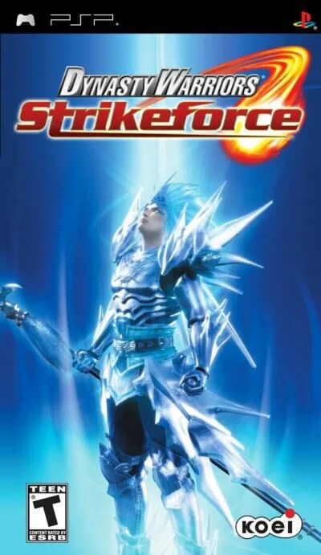
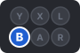
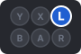
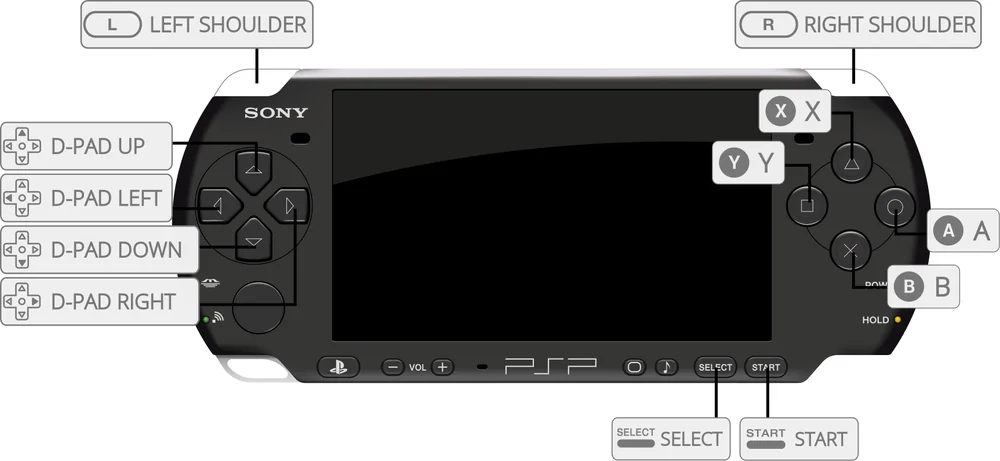

PSP
Dynasty Warriors: Strikeforce
- Año: 2009
- Desarrollador: Koei
- Género: Acción
- Jugadores: 4 jugadores
Acción de Koei en la China de los Tres Reinos: un oficial de Wei, Wu o Shu sale desde su pueblo base a batallas contra ejércitos enteros, con dos armas, habilidades de chi, el modo furia y jefes gigantes. Hasta cuatro jugadores.
Controles
que el guerrero se mueva con el joystick y qué botón hace el ataque normal, el cargado y el Musou. Según la Wikipedia: A (○) cambia al arma secundaria. ¿Va fluido?
Mando de PSP. El joystick mueve la cruceta y también la palanca analógica, porque muchos juegos de PSP solo se mueven con ella.
| Panel | Juego |
|---|---|
 | ✕ |
 | ○ |
 | R |
 | □ |
 | △ |
 | L |
 | Start |
 | Select |
+  | Salir del juego |
El panel en PSP



🔎 Dudas para mirar jugando (1)
Datos de la guía que las fuentes no aclaran: si los compruebas en la bartop, apúntalo en las pruebas.
- ¿A dos se juega a la vez o por turnos?
Argumento
Lo marcado con ⚠️ no está probado en la bartop.
Ambientado en la China de los Tres Reinos, como toda la serie Dynasty Warriors: los guerreros de los reinos de Wei, Shu y Wu luchan por el poder. ⚠️ Las fuentes no cuentan la historia de este juego en concreto.
Fuentes
Jugabilidad
Lo marcado con ⚠️ no está probado en la bartop.
- Acción contra ejércitos enteros (hack and slash), basado en Dynasty Warriors 6 (2009). En Japón se llamó Shin Sangokumusou Multi Raid.
- Despertar (Awakening): transformación que cambia el aspecto del personaje y sube sus atributos (una versión mejorada del «modo furia» de Dynasty Warriors 5).
- Arma secundaria: cualquier arma, que se cambia con un botón.
- Orbes y chi: los orbes mejoran el arma (ataque, alcance…); los objetos de chi dan habilidades (saltos extra, ataques más fuertes, flotar…).
- Niveles: los personajes suben hasta el nivel 50, y las armas también suben de nivel.
- Base: antes de cada misión, un pueblo con academia, taller, herrería, almacén y santuario.
- El pueblo, con más detalle: se cambian materiales y se compran armas, objetos, habilidades de chi y orbes; a veces llegan personajes con materiales o cartas de oficial que hacen crecer el pueblo, y las tiendas mejoran con el tiempo.
- Personajes: se elige uno de un bando (Wei, Wu o Shu); al completar la historia se añaden más sin empezar de nuevo, conservando lo conseguido. Plantilla y aspecto de Dynasty Warriors 6. Los chi van en cuatro ranuras (brazos y piernas).
- Misiones: en el tablón o con el guardia de la puerta. Cada batalla es una serie de mapas pequeños hasta el comandante enemigo; los objetivos varían («derrota al comandante», «recupera los cofres»…) y hay retos extra con más experiencia.
- Batallas aéreas y jefes enormes con forma de bestia, que se vencen mejor entre varios. En modo furia (la descripción lo llama así), mejores atributos y el ataque Musou.
- Multijugador solo por ad hoc.
- Multijugador local hasta cuatro, en incursiones juntos o unos contra otros.
Botones según las guías (⚠️ por confirmar)
| Mando de PSP | Panel | Acción |
|---|---|---|
| Palanca |  | Mover al guerrero |
| ○ | | Cambiar al arma secundaria |
- ⚠️ No he encontrado el resto de controles.
Fuentes
Guía de niveles
Lo marcado con ⚠️ no está probado en la bartop.
- Misiones que se eligen desde el pueblo base.
- ⚠️ No he encontrado la lista de misiones: ver «Vídeos».
Fuentes
Objetos
| Objeto | Qué hace |
|---|---|
| Arma secundaria | Se lleva otra arma de cualquier tipo |
| Orbe | Mejora el arma: ataque, alcance… |
| Chi | Da una habilidad: más saltos, ataques más fuertes, flotar… |
| Accesorio | Mejora los atributos |
Fuentes
Trucos y secretos
Lo marcado con ⚠️ no está probado en la bartop.
- Tuvo una versión para PS3 y Xbox 360 (2009-2010) y una segunda parte solo en Japón (Multi Raid 2).
- ⚠️ No he encontrado trucos.
Fuentes
Longplay

Primera parte de una partida de la versión PSP (97 min), de J・ゲーマー: Dynasty Warriors Strikeforce - Walkthrough part 1.